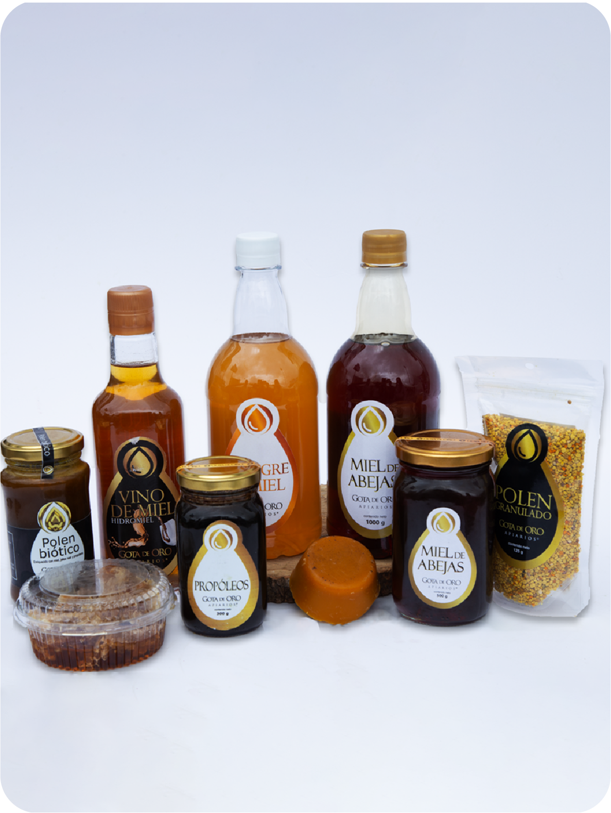

Miel

Características
Todos los productos agrícolas son alimentos medicinales, ayuda a tratamientos de la piel y es cicatrizante, son anti inflamatorios, antibiótico natural que ayuda fortalecer el sistema inmune.
Alexandra

321 6852162 - 311 6267149